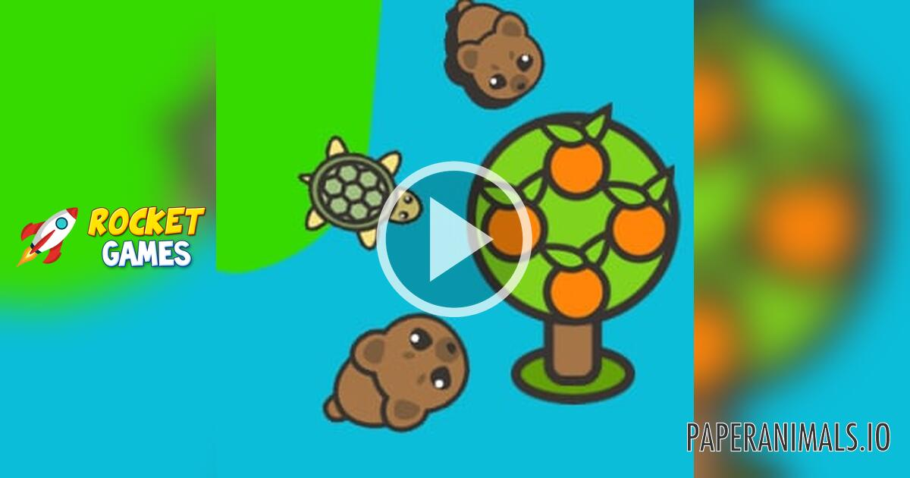
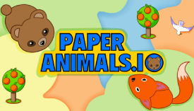

Introduction
AIPaperAnimals.io is a competitive multiplayer arena game where players control adorable AI-powered paper animals in a vibrant paper-cut world. Unlike traditional io games, each animal leaves a colorful trail that players must close to claim territory — turning empty canvas into claimed land. The game features hand-drawn crisp graphics and smooth animations that give each creature a charming personality. Players capture fruit-bearing trees within their territory to gain experience and level up, unlocking new animals like foxes, wolves, and eagles with unique abilities. The fast-paced gameplay rewards quick reflexes and strategic territory planning. Every match is a relentless battle for survival where one wrong move means elimination. The combination of accessible controls, satisfying progression, and competitive multiplayer action makes AIPaperAnimals.io stand out among browser games. Visit https://aipaperanimals.io to join the arena and prove your animal is the apex predator.
Getting Started

Starting your adventure in AIPaperAnimals.io is simple and intuitive. Open your browser and navigate to https://aipaperanimals.io — no downloads or sign-ups required. Once in the lobby, select your starting animal and enter the arena. Your animal follows your mouse cursor automatically, leaving a visible trail wherever it travels. To claim territory, draw a closed shape and return to your existing colored domain — the area inside your trail becomes yours instantly. Any fruit trees within your new territory are captured and will generate experience points over time, filling your upgrade bar. Left-click anywhere to activate your animal's special ability — use this strategically when cornered or hunting. Your first goal should be expanding slowly near your spawn point, capturing trees for passive XP. Watch the minimap in the corner to spot nearby players and avoid their trails. Stay close to your territory early game; venturing too far makes you vulnerable to elimination.
Basic Tips
First, always complete your trail before retreating — an unfinished trail is an open invitation for enemies to chase you and kill you by crossing it. Second, prioritize capturing fruit-bearing trees early; each tree provides steady XP that accelerates your progression toward unlocking stronger animals. Third, keep your claimed territory compact and connected rather than sprawling across the map, as scattered land is difficult to defend and patrol. Fourth, watch other players' trail colors on the minimap to identify threats and opportunities — a player with a thin, stretched-out trail is likely vulnerable and easy to eliminate. Fifth, use your special ability (left-click) defensively when trapped rather than offensively; escaping certain death is more valuable than risky kills early in the game.
Advanced Strategies

Experienced players master the art of the quick-capture technique: instead of drawing large elaborate shapes, make small rapid loops near your territory's edge, returning quickly to minimize exposure time. This reduces the window where enemies can intercept your trail. Another effective strategy is territorial denial — when you spot an enemy with an unfinished trail, position yourself between them and their territory to cut off their escape route. Experienced players also use the minimap to track spawn points of new players and intercept them while they're weak and unestablished. Finally, learn to balance aggression and patience: during mid-game, let larger players fight each other while you quietly expand your territory and capture high-value trees, then strike when you're strong enough to challenge them.
Pro Tips

Pro players memorize the exact duration of each animal's special ability cooldown and plan engagements around having it available — entering combat without your ability ready often means certain death. Advanced players also exploit AI patrol patterns: enemy animals often follow predictable routes near their territory edges, making them vulnerable to ambushes. Another expert technique is territory baiting — deliberately leaving a small gap in your border to lure aggressive players into your domain where you have the spatial advantage. Finally, top players communicate with team indicators when playing in group modes, coordinating multi-directional encirclement maneuvers to trap enemies in crossfire between multiple trails.
🎮 Controls & Mechanics Deep Dive
If you think AIPaperAnimals.io is just a simple point-and-click game, you’re in for a rude awakening. The movement physics here are surprisingly deep, and understanding them is the difference between dominating the leaderboard and constantly crashing into your own tail. Let’s break down exactly how your paper critter moves and interacts with the world.
First off, your animal doesn't turn on a dime. There is a distinct momentum and turning radius built into the controls. When you flick your mouse to change direction, your creature will drift slightly before catching the new angle. This means you can't make sharp 90-degree turns without risking a self-collision. Pro players use this drift to their advantage, executing wide, sweeping loops to close off massive chunks of territory quickly.
When it comes to collision and hitboxes, the game is surprisingly forgiving. The actual hitbox for your animal’s head is about 20% smaller than its visual paper model. This means you can thread the needle through incredibly tight gaps between enemy trails without instantly dying. However, keep in mind that your unattached trail (the colored line you leave behind when you're outside your claimed territory) has a razor-thin, unforgiving hitbox. If any part of an enemy touches your loose trail, you're eliminated.
Scoring is entirely tied to the area enclosure mechanic. You don't get points just for running around; you only score when you successfully connect your trail back to your claimed territory. The game calculates the exact pixel area you’ve enclosed. Furthermore, the tree capture mechanic is instantaneous upon enclosure. If you manage to trap three fruit-bearing trees inside a single loop, you get a massive, compounding XP burst that instantly levels you up, increasing your top speed and making your trail slightly wider and harder to cross.
🎯 Game Modes Breakdown
While the core loop of drawing trails and grabbing trees remains the same, the different game modes in AIPaperAnimals.io completely change the pacing and strategy. Here is what you need to know before you queue up.
- Free-For-All (FFA): This is the classic, bread-and-butter mode. It’s a 16-player free-for-all where everyone is out for themselves. The map is massive, allowing for slow, methodical expansion. The strategy here is all about map awareness and avoiding early-game aggro. You want to secure a solid corner, grab a few trees to level up, and then start expanding inward. It’s a marathon, not a sprint.
- Team Mode: Playing in 4v4 or 8v8 teams completely shifts the dynamic. In this mode, you can share territory borders with your teammates. This means you don't have to close every single loop yourself; you can just draw a line to your ally's claimed land. The objective is to create a massive, contiguous paper fortress. Communication is key here, as you need to coordinate who is playing defense (guarding the outer edges) and who is pushing into the center for high-value tree clusters.
- Battle Royale (Shrinking Canvas): This is where the panic sets in. The "desk" you're playing on literally shrinks over time, forcing players into a tighter and tighter space. Early game is all about rapid, aggressive leveling. You need to grab trees and get big fast. In the late game, the map is so small that everyone is constantly crossing paths. Survival relies on baiting enemies into crossing your trail while you safely tuck yourself inside your own territory.
- Practice Sandbox: Don't skip this if you're new! The sandbox mode removes all enemies and gives you an infinite, blank canvas. Use this to practice your muscle memory. Try drawing perfect circles, figure-eights, and tight spirals to get a feel for your animal's turning radius and drift. It’s also the best place to test out different animal unlocks to see which one fits your playstyle.
🚀 Advanced Strategies & Pro Tips
Once you’ve got the basics down and you're consistently placing in the top three, it’s time to look at the high-level tactics that separate the casuals from the absolute tryhards. These are the advanced mechanics and psychological plays you need to start incorporating into your gameplay.
The "Bait and Trap" Maneuver: This is the most reliable way to get kills without risking your own life. When you see an enemy aggressively pushing toward your territory, don't just run away. Instead, leave a tiny, deliberate gap in your outer defense or draw your trail slightly too close to them. When they lunge to cross your unattached trail, sharply cut your movement to cross their unattached trail instead. Because they are overextended, they won't have the turning radius to dodge your counter-attack.
XP Starvation and Zone Denial: Trees are the lifeblood of your progression. If you spot an enemy hovering near a dense cluster of fruit-bearing trees, don't just ignore them. Quickly enclose the area around the trees, even if it’s a small loop. By claiming the land, you deny them the XP and force them to waste time walking all the way back to the center of the map. Starving your opponents of resources is just as important as gathering them yourself.
Trail Whipping and Micro-Movements: High-level players don't just hold the mouse in one direction. They use "trail whipping"—making tiny, rapid micro-adjustments to their mouse position. This creates a jagged, unpredictable trail that is incredibly difficult for enemies to time their crosses against. If an enemy is trying to read your movement to cut you off, a jagged trail breaks their line of sight and messes up their timing.
Endgame Edge-Hugging vs. Center Control: In the final circles of a Battle Royale, the map is chaotic. Beginners will hug the absolute edge of the shrinking boundary. Pros know that hugging the exact edge is a death trap because you have no retreat space. Instead, position yourself just one body-length inside the safe zone. This gives you the space to dodge if someone tries to trap you, while still allowing you to snipe the trails of players who are panicking against the actual boundary line.
❓ Frequently Asked Questions
Is AIPaperAnimals.io completely free to play?
Yes, the game is 100% free to play directly in your web browser. There are no pay-to-win mechanics. You can unlock new paper animals and custom trail colors purely by earning XP and leveling up through gameplay. There are optional cosmetic microtransactions, but they offer zero competitive advantage.
Can I play the game on my phone or tablet?
Absolutely. The game features a fully responsive mobile interface with touch controls. However, because the game relies heavily on precise mouse movements and quick reflexes to manage your trail, playing on a PC or Mac with a mouse will always give you a significant competitive edge. If you do play on mobile, make sure to use the "joystick" sensitivity settings to fine-tune your turning radius.
How do I play with my friends?
You can easily set up a private lobby. When you're in the main menu, look for the "Create Private Room" button. This will generate a unique lobby code or link that you can share with your friends. You can adjust the settings in the private room to tweak the tree spawn rates, map size, and whether friendly fire is turned on or off.
What are the minimum system requirements?
Because it’s a browser-based .io game, the system requirements are incredibly low. You don't need a gaming rig. Any modern laptop or even a Chromebook from the last five years will run it perfectly. The most important "requirement" is a stable internet connection. Since the game relies on real-time server tick rates for collision detection, a wired ethernet connection or a strong 5GHz Wi-Fi signal will prevent the lag spikes that lead to accidental self-collisions.
How do I unlock the rare AI animals?
Every time you level up your account by capturing trees and enclosing territory, you earn "Paper Scraps." These scraps are used in the main menu's crafting wheel to unlock new, rarer animal designs. Some of the ultra-rare animals also require you to complete specific weekly challenges, like "Enclose 50 trees in a single match" or "Win a Battle Royale without dying in the first two minutes."
Conclusion
AIPaperAnimals.io delivers an addictive blend of territory control, animal variety, and fast-paced multiplayer action that keeps players coming back for more. Whether you're casually expanding your paper forest or aggressively hunting rivals, every match offers fresh strategic challenges. The satisfying progression from humble starter animal to legendary apex predator creates a compelling reason to improve. Jump into the arena today at https://aipaperanimals.io, claim your territory, capture those trees, and prove your animal deserves to rule the paper kingdom.